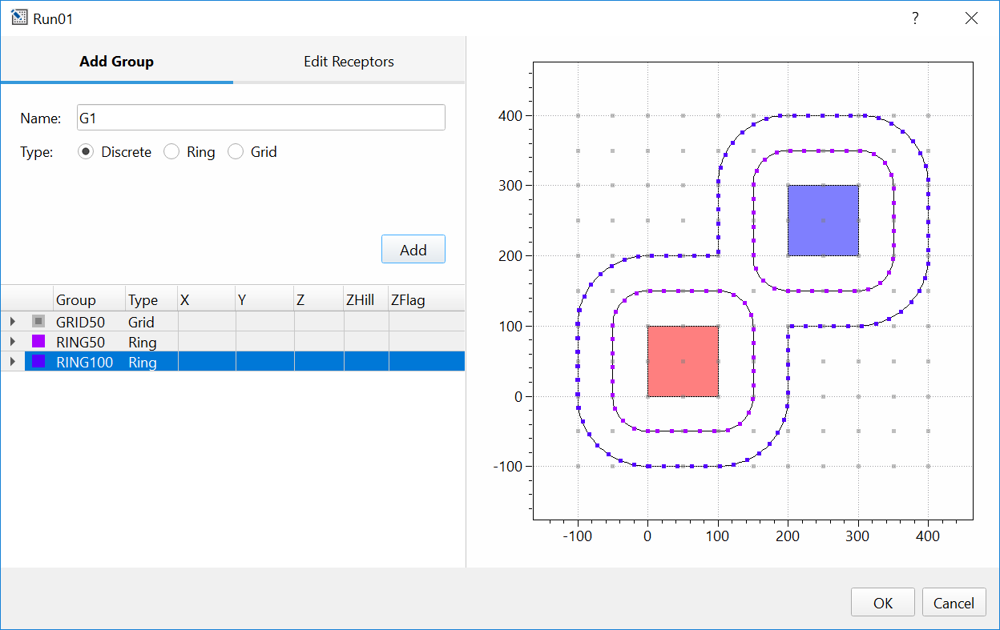

Managing Receptors¶
To view and edit receptors, right click a scenario in the Project Browser, then select Edit Receptors from the Scenario Context Menu. This will open an interactive dialog where Discrete, Ring or Uniform Grid receptors can be defined.
{kind=link}
SOFEA uses the concept of a Receptor Group to organize receptors. For grid
receptors, this corresponds to Netid for GRIDCART receptors in AERMOD.
For discrete receptors, including rings, this corresponds to Arcid for
EVALCART receptors in AERMOD.
The plot on the right-hand side shows all sources and receptors already defined within a Scenario. As receptors are added through the interactive dialog box, they are automatically added to the plot so that you can visually confirm that added receptors are placed at the desired locations. You can modify the color of group of receptors by double-clicking the square symbol in the first column of the table.
Receptor groups, discrete and grid receptors can be defined at any time. As ring receptors are linked to source geometry, these receptors can only be defined after sources have been added to a source group.
Discrete¶
Add or remove discrete Cartesian receptors. To add a discrete receptor, type in X and Y receptor coordinates and terrain elevation in meters, then click Add. Added receptors will be shown on the plot to the right. Receptors can be removed by highlighting a receptor or a group of receptors within the list of receptors and clicking Remove.
In AERMOD, DISCCART keyword is reserved for discrete receptors. After
you save the modifications made to the Discrete tab, the AERMOD input
file will be populated with a list of RE DISCCART Xcoord Ycoord
(Zelev Zhill) (Zflag) entries. Here, Xcoord and Ycoord will
correspond to inserted coordinates, Zelev and Zhill to
entered elevation or to 0 if elevation was not entered and Zflag to
receptor flag height entered in the General Source setting
(default is 1.5 m).
{kind=link}
Rings¶
Add a special type of discrete Cartesian receptors defined with the
EVALCART keyword in AERMOD, once the sources are defined in Scenario.
These receptors are similar to discrete receptors defined with the
DISCCART keyword, but EVALCART also allows for grouping of
receptors, in this case along equidistant “rings” surrounding a source
or a group of sources.
This set of receptors is especially useful for fumigation applications when concentrations at the specific distances from the area source are needed. Module within SOFEA creates receptors at the equal distance from the edge of all area sources specified in the Buffer distance field. Receptors are placed around the entire group of adjacent sources rather than within any source, as demonstrated in the plot below.
From the drop down menu select the Source Group for which Rings of receptors are desired. Type in Buffer distance and Receptor spacing in meters, then click Add. Added receptors will automatically appear on the plot to the right.
As you save the modifications made to the Rings tab, the AERMOD input
file will be automatically populated with a list of RE EVALCART
Xcoord Ycoord Zelev Zhill Zflag Arcid using the information
associated with the rings that were created: Xcoord and Ycoord
will correspond to the coordinates of created Ring receptors, Zelev
and Zhill will be entered as 0, Zflag will correspond to the
receptor flag height entered in the General Source setting (default is
1.5 m), and Arcid will correspond to the names of the created rings.
Warning
Receptor rings will not automatically update if source geometry changes, or sources are added or removed from the source group. To update rings, you must select the group and click Update in the Receptor Editor.
Uniform Grid¶
Add or remove Cartesian grid receptor networks, defined with GRIDCART
keyword in AERMOD. To add gridded receptors, enter coordinates of the
starting grid location – this is the southwest corner of the gird. Enter
the number of receptors along the x and y-axis and required distance
in meters between the receptors in x and y directions. Then press
Add. Added receptors will automatically appear on the plot
to the right.
As you save the modifications made to the Uniform Grid tab, the AERMOD
input file will be populated with RE GRIDCART Netid lines where
Netid represent receptor network identification code automatically
generated in SOFEA. Start and the end of the grid network will
be indicated with STA and END parameters. Parameters entered in
the Uniform Grid tab will be saved in AERMOD file in this format:
RE GRIDCART Netid XYINC Xinit Xnum Xdelta Yinit Ynum Ydelta where
Xinit and Yinit correspond to the coordinates entered in the
Starting grid location field, Xnum and Ynum correspond to
the values entered in the Receptor count field, and Xdelta and
Ydelta correspond to the values entered in the Receptor spacing
field.
{kind=link}